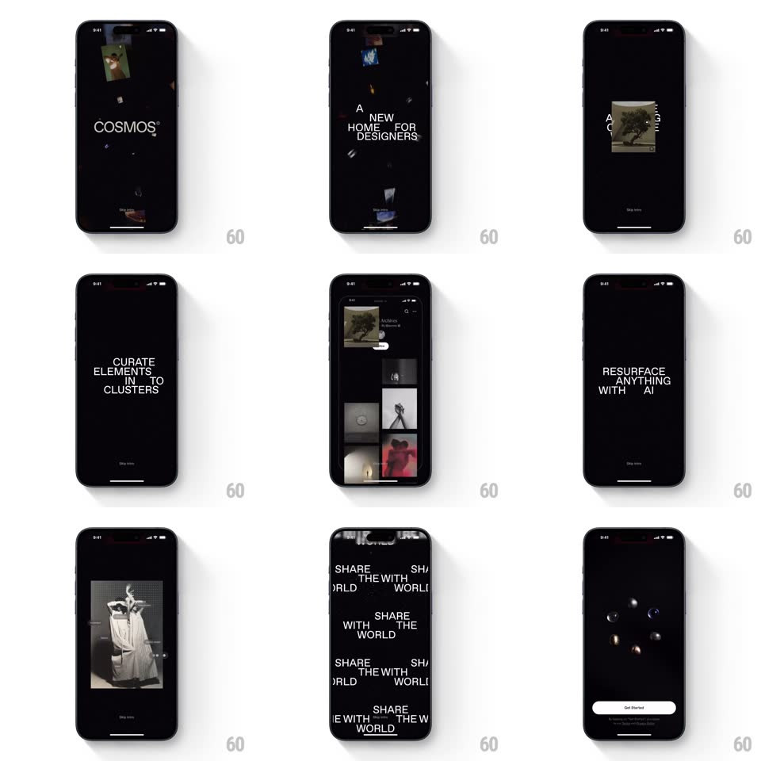

Media
Frame-by-frame

Rebuild this animation 1:1: Cosmos' intro - a fast auto-playing black-sequence of kinetic typography and floating imagery ending on glass marbles and a Get Started pill.

Rebuild this animation 1:1: Cosmos' intro - a fast auto-playing black-sequence of kinetic typography and floating imagery ending on glass marbles and a Get Started pill. ## Integration Integration: stack-agnostic spec - springs given as stiffness/damping, timed motions as duration + curve; map every value to your framework and animation library of choice. ## Scene Full-black auto-playing sequence: "COSMOS(R)" surrounded by floating image tiles, a mirrored duplex "A NEW HOME FOR DESIGNERS", "CURATE ELEMENTS INTO CLUSTERS", a masonry grid of saved art, a full-screen wall of repeating "SHARE THE WORLD" type, and a final screen of floating glass marbles above a "Get Started" pill. ## Motion spec Pattern: auto-playing kinetic-type showcase. - Beats advance every ~1.2-1.8s with hard-cut energy but eased internals; total run ~10s. - Opening: image tiles drift in from the edges on slow float paths (each with its own +-10px drift loop) while "COSMOS(R)" tracks in (letter-spacing +0.2em to 0, 600ms). - Duplex headline: "A NEW HOME FOR DESIGNERS" appears twice - upright and vertically mirrored - the two copies sliding from opposite directions and locking together (300ms, ease-out), the mirrored copy at 40% opacity. - "CURATE ELEMENTS INTO CLUSTERS": words stack in one at a time (each dropping 12px into place, 150ms apart) as a sample image card tilts in behind (rotate -6deg to 0, spring ~300/20). - Masonry grid: columns scroll in opposite directions (top column down, next up, 8s linear loops) while the header fades over. - Type wall: "SHARE THE WORLD" rows tile the screen, alternating rows sliding left and right (linear, 6s loops, offset phases) with occasional rows flipping to outline-stroke style. - Finale: the type wall parts to black; 6-8 glass marbles rise from the bottom with refraction shimmer (translateY +40px to resting, spring ~280/18, 60ms stagger) and idle-float; "Get Started" pill fades up (250ms) and the sequence stops, awaiting tap. ## Calibration - Keep every beat under 2s - the sequence should feel like a trailer, not a tour. - Type is white on black throughout; imagery supplies the only color until the marbles. ## Reduced motion Static key screens crossfade; no scrolling rows. ## Don't miss - The mirrored-headline duplex effect and the parting type wall are the signature moves. - "Get Started" is the only interactive element - everything before it is playback.